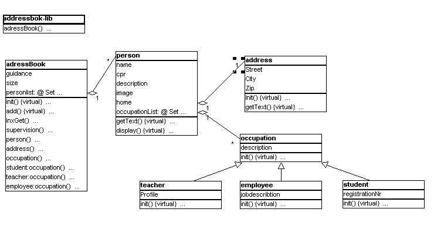

addressbook The classes that defines the data objects in the application.
addressbookgui The classes that defines the graphical user interface.
addressbookappl The controlling application that ties the data model to the graphical user interface.
The data model is created in Freja (Mjølner BETA CASE tool). The following diagram describes the data model for the addressbook application:

The Freja manual can be consulted to get an explanation of the graphical notation used in the diagram.
Here is a short description of the classes in the diagram:
addressbook Has a list of persons.
person Has a number of simple attributes: name, CPR etc., a reference to the current address, and a list of occupations.
address Simple attributes: Street, city etc.
occupation Can be teacher, student and employee. This part of the model is left out of the application for simplicity.
The addressbook model does not have visibility to the addressbookgui (i.e. it does not INCLUDE the addressbookgui fragmentgroup). This ensures that the addressbook data objects can be made persistent objects.
The addressbookgui does not know about the addressbook data model. This allows the addressbook user interface to be reused in other applications.
The addressbookappl includes both the data model and the user interface, and ties the two together.
The following sections will explain how to create the user interface
and the application.
| Interface Builder - Tutorial | © Mjølner Informatics |